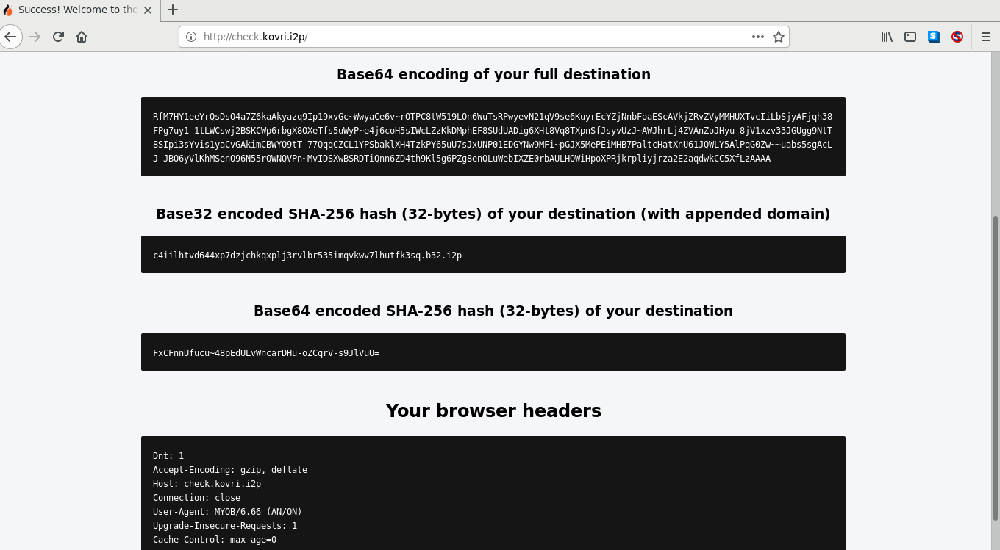

firefox.profile.i2p


What it is
*Attention: * If you're on Windows, this is probably
not the browser you're looking for. An official one is now available
from the i2p website. It is largely the same as this one, but supports
multiple languages and has more focus on the needs of Windows users. This
is still a reasonable choice for a Linux I2P Browser.
This is a set of tools for major Desktop computing platforms(Windows,
Mac OSX, and Linux) which automatically configures a Firefox browser for
use with i2p. It attempts to minimize the amount of user interaction that
is required to get the browser up and running correctly. It requires an i2p
router and either a Firefox or Tor Browser to run.
To the end of simplicity, it attempts to make use of standard, familiar
installation procedures for each of these platforms. The Windows package is
just a regular installer.exe/uninstaller.exe pair. You download either
Firefox or the Tor Browser Bundle and install it first. Then you
download the installer from the github releases, and run it. It will
place two items on the start menu and two shortcuts on the desktop, any of
which will launch a browser pre-configured to use i2p.
On OSX, the goal is to create a .dmg application image but I'm stalled
here for the moment while I wait for more access to an OSX machine.
On GNU/Linux it's more of a collection of tools for a variety of package
managers. Ubuntu users will probably find the snap package most convenient.
It just bundles Firefox and the scripts that make sure the configuration is
correct together in their little snap package and runs it from inside the
container. There are also a variety of other options for other
platforms.
What it configures is a profile for Firefox, set up to use i2p, with an
accompanying launcher for easy use. It also comes pre-configured to disable
certain features that may weaken the anonymity that i2p provides, and with
NoScript and HTTPS Everywhere.
For more information, see: DETAILS.md
Much of this is ready for interested parties to test, but it's still
just being tested and the rough edges are still being figured out. Use at
your own risk.
For now, the testing release page is here: Github
Releases where the Windows installer has been made available. The
"current" release will always track the newest working version. Numbered
releases are the latest version that I'm testing. There's not really a
coherent rationale to the version numbers yet. I move them when I add a
feature to make sure I know what to uninstall.
Coarse Changelog/Roadmap
- Current == 0.05
- 0.x Intitial configuration,
- 0.01x Wrapper-launcher for Windows/Firefox, Whonix browser for Debian
Derivs
- 0.02x Improved Reliability
- 0.03x Reddit to-do list, i2prouter integration, Tor Browser Bundle
integration for Windows
- 0.04x Additional packaging, snap, dmg, deb metapackage
- 0.05x Tor Browser Bundle integration for OSX, torbrowser-launcher
integration for Linux, Internationalization
- 0.06x (Planned) Finalize packaging, User-readiness, automate
fingerprint measurements, automate hostile testing.
- 0.07x (Planned) Control Plugin, additional plugin evaluation(Font
fingerprint mitigations? Perhaps an "Expert Bundle" with uMatrix?)
- 0.08x (Planned) Android port, build-from-source
- 0.09x (Planned) Selenium-based browser tests, Update services
- 0.10x (Planned) No known bugs. Best-case scenario for current i2p
browsers using Firefox or TBB.
Donate
-
XMR:43V6cTZrUfAb9JD6Dmn3vjdT9XxLbiE27D1kaoehb359ACaHs8191mR4RsJH7hGjRTiAoSwFQAVdsCBToXXPAqTMDdP2bZB
- BTC:159M8MEUwhTzE9RXmcZxtigKaEjgfwRbHt
- ETH:0x2c7F38c592938915C263a51b4AC078bf91F47C5D
- (These are to me, not the i2p project)
Windows Setup
Automatic Setup (Recommended, Windows) Standalone guide
- Install the Firefox web browser. You can download it from Mozilla's web site.
Alternatively, if you're using the latest testing version of the
profile, it will use a Tor Browser if one is found in a
default location, which you can get from the Tor Browser
Bundle download page. This may provide additional security.
- Download the i2p Firefox profile installer, install-i2pbrowser.exe,
from
This releases page and run it. If Firefox was not detected in the
default location, then you will be offered a menu to select it in a
custom location.
- To start Firefox with the i2p Browsing profile, click the shortcut to
"I2PBrowser-Launcher" or "Private Browsing-I2PBrowser-Launcher" from your
Start Menu or your Desktop.
Run-From-Zip (Alternative, Windows)
- Install the Firefox web browser. You can download it from Mozilla's web site. The
browser must be installed in a default location selected by the
Firefox installer for this to work. This version does work with Tor
Browser yet.
- Download the i2p Firefox profile zip bundle, i2pbrowser-windows.zip,
from
This releases page
- To start Firefox with the i2p Browsing profile, double-click the
i2pbrower.bat script.
OSX Setup
Entirely Untested. I've managed to build .dmg files
that contain the scripts annd the profile. They should work, but
until I get a Mac, I won't know for sure. To generate one on a Mac, install
create-dmg from brew and run
make osx
- Install the Firefox Web Browser from Mozilla's web site. This
version doesn't integrate with a Tor Browser Bundle yet.
- Install the .dmg file you generated with make.
- Launch the I2PBrowser.sh script.
Linux Setup
Automatic Setup Standalone guide
(Debian, Ubuntu, apt-based with Firefox-ESR)
A pre-built deb(for now, crudely generated with checkinstall) is able to
configure an i2p browser on Debian-based distributions as long as they
package Firefox, NoScript, and HTTPS-Everywhere. This deb simply configures
system-firefox with alternate defaults and configures launchers to use them
with. Note that in this configuration, Firefox will also have the system
plugins installed in Debian.
- Download the i2pbrowser-helper .deb package from the releases
page.
- Double-click the newly downloaded .deb file and install it.
-
Run I2PBrowser.sh and/or I2PBrowser-Private.sh to launch Firefox
with the i2p browsing profile.
#! /bin/sh
wget -c https://github.com/eyedeekay/firefox.profile.i2p/releases/download/0.04/i2pbrowser-helper_all.deb
sudo apt-get install ./i2pbrowser-helper_all.deb
Building a .deb with Checkinstall
If you don't want to trust the deb I generated, then it's also very
simple to generate your own from this source code.
- Install git, make, and checkinstall
- Clone this repository and change to the newly created directory
- run 'make debfirefox'
-
Install the generated package.
# /bin/sh
sudo apt-get install git make checkinstall
git clone https://github.com/eyedeekay/firefox.profile.i2p && cd firefox.profile.i2p
make debfirefox
i2pbrowser-helper_all.deb
sudo apt-get install ./i2pbrowser-helper_all.deb
The latest snap can be installed from edge and has desktop shortcuts.
- Open a terminal and run: 'snap install --edge i2pbrowser'
-
Run the shortcut from your application menu or /snap/bin/i2pbrowser
from a terminal.
#! /bin/sh
snap install --edge i2pbrowser
/snap/bin/i2pbrowser
It's not likely that integrating a snap with Tor Browser will be
possible unless Tor Browser becomes available as a snap, which seems
unlikely. I can think of some things that might work but none
are... perfectly clear to me. Auto-updating of the profile via the install
script isn't possible in the snap, but snapcraft.io seems to get
updates about ~9 minutes after this repository does. That means a s simple
'snapcraft refresh --edge i2pbrowser' will automatically update the profile
for you.
- Install the firefox-esr browser from your distribution or from
Mozilla's web site. Be sure to place it into your PATH as firefox, for
example, /usr/bin/firefox.
- Download the GNU/Linux zip bundle from the releases page and unpack
it.
-
Run the following make targets:
#! /bin/sh
make recopy-linux
sudo make install
When it's done, you can run 'I2PBrowser.sh' to start the i2p browser
profile.
Docker Setup Standalone guide
(Linux, probably OSX, Windows?)
Linux and Mac OSX users can run the browser within a Docker container.
This image uses an entirely un-official upstream image of the Tor Browser
Bundle from Dockerhub, also authored by me. Should you wish to build it
yourself, instructions can be found below. However, if you wish to run the
i2p Browser from the Docker Hub and have i2p installed on the host, you may
simply:
docker run --rm -i -t \
-e DISPLAY=:0 \
--net host \
--name i2p-browser \
--volume /tmp/.X11-unix:/tmp/.X11-unix:ro \
eyedeekay/firefox.profile.i2p
To launch a Tor Browser configured with this profile from the
terminal.
In order to examine or build the upstream package locally, see: eyedeekay/tbb-docker.
If you have trouble connecting the Dockerized application to the X
server, you may need to authorize the Docker user to access the X
server.
xhost +"local:docker@"
Manual Setup (Various Linuxes) Standalone guide (Debian-Derived distros see Footnote
#2)
NOTE: I'm probably going to add an apparmor profile to this setup
for optional installation.
- Install Firefox-ESR via the method preferred by your Linux
distribution.
- Download the i2pbrowser-gnulinux.zip from here. If you prefer, an
identical i2pbrowser-gnulinux.tar.gz is also available.
- Extract it.
- Run ./install.sh install from within the extracted folder.
Alternatively, run ./install.sh run to run entirely from within the
current directory.
If you want to just copy-paste some commands into your terminal, you
could:
#! /bin/sh
curl https://github.com/eyedeekay/firefox.profile.i2p/releases/download/current/i2pbrowser-gnulinux.tar.gz --output i2pbrowser-gnulinux.tar.gz
tar xvzf i2pbrowser-gnulinux.tar.gz
cd i2pbrowser-gnulinux
./install.sh install
Once you've run "./install.sh install" you can safely delete the profile
folder if you wish. Alternatively, you could choose to run from the
downloaded profile directory by running "./install.sh run" or "./install.sh
private" instead. This will always start in Private Browsing mode, and if
you delete the download folder, you will need to re-download it to run the
browser from the directory again.
Here's some more information about how to use the install script:
usage:
./install.sh install # install the profile and browser launcher
./install.sh uninstall # remove the profile and browser launcher
./install.sh alias # configure a .bash_alias to launch the browser
./install.sh usage # show this usage message
./install.sh update # update the profile
./install.sh run # run from this directory without installing
firefox --no-remote --profile "$DIR/.firefox.profile.i2p.default" about:blank $1
./install.sh private # run in private mode from this directory without installing
firefox --no-remote --profile "$DIR/.firefox.profile.i2p.private" --private about:blank $1
./install.sh debug # run with debugger from this directory without installing
firefox --jsconsole --devtools --no-remote --profile "$DIR/.firefox.profile.i2p.debug" --private about:blank $1
Notes/Appendix
Screenshots


Differences from Tor Browser
TL:DR There is no security slider, and to compensate for this issue, the
Browser is configured to enable fewer features by default. It also can't do
stuff like notify you about your browser window size.
This browser takes cues from the Tor Browser, which is also a reasonable
choice for an i2p browser, but it has some absolutely critical differences
from the Tor Browser which will probably not come into play, but which you
should be aware of. First, there is no Torbutton, which means that this
browser lacks the coarse global controls of sensitive browser features that
the Torbutton provides to the Tor Browser Bundle. In order to deal with
this issue the default NoScript configuration is more restrictive.
Whonix Setup(Advanced)
Debian/Ubuntu users can use Whonix stretch-testng i2p
browser launcher
If you are using Debian or Ubuntu, or probably any other up-to-date
apt-based Linux distribution, there's another option which may you may
prefer. In order to do this, one must add the Whonix apt package repository
to your package sources, and install their tb-starter package from their
stretch-testing repository. Don't worry, I'll take you through it
step-by-step.
This guide is intended for users who are aware of the
implications of using third-party repositories on their
Debian-based Linux PC's. In particular, Whonix is designed to
pro-actively prevent certain kinds of attacks from affecting the user, and
their packages sometimes overwrite things like hosts files and such with
versions suitable for the Whonix threat model. While I currently use the
following packages successfully on both Debian and Ubuntu Linux at this
time, I cannot guarantee that they will work for everyone's specific
configuration.
First, you'll need to obtain and install the Whonix package signing
keys. This will allow you to be sure that you are obtaining the correct
package from the repository automatically.
sh sudo apt-key --keyring /etc/apt/trusted.gpg.d/whonix.gpg adv
--keyserver hkp://ipv4.pool.sks-keyservers.net:80 --recv-keys
916B8D99C38EAF5E8ADC7A2A8D66066A2EEACCDA
Next, you need to tell apt, the package manager, where to look for the
packages in question. The i2p browser is still in stretch-testers, so that
is the version we will be using. 'main' means that the profile is Free
Software per the Debian Free Software Guidelines.
sh echo 'deb http://deb.whonix.org stretch-testers main' | tee
/etc/apt/sources.list.d/whonix-testing.list # apt-transport-* season to
taste
Now, you must tell apt to update it's list of available packages so it
becomes aware of the Tor Browser packages.
sh sudo apt-get update
Finally, install tb-starter and tb-updater.
sh sudo apt-get install tb-starter tb-updater
The last step is to run update-i2pbrowser. This will pre-configure the
i2p browser on your system.
sh update-i2pbrowser
If for some reason, update-i2pbrowser doesn't work(Usually this is in
the absence of Tor on the system) you may run
sh update-i2pbrowser --devbuildpassthrough
instead.
Finally, you need to add the following lines to the bottom of
/etc/i2pbrowser.d/31_i2p_default.conf.
# /etc/i2pbrowser.d/31_i2p_default.conf
TOR_HIDE_UPDATE_CHECK_UI=1
TOR_NO_DISPLAY_NETWORK_SETTINGS=1
TOR_HIDE_BROWSER_LOGO=1
TOR_SKIP_LAUNCH=1
TOR_SKIP_CONTROLPORTTEST=1
Or, you can just run these commands, now that you know what they do:
#! /bin/sh
sudo apt-key --keyring /etc/apt/trusted.gpg.d/whonix.gpg adv --keyserver hkp://ipv4.pool.sks-keyservers.net:80 --recv-keys 916B8D99C38EAF5E8ADC7A2A8D66066A2EEACCDA
echo 'deb http://deb.whonix.org stretch-testers main' | tee /etc/apt/sources.list.d/whonix-testing.list # apt-transport-* season to taste
sudo apt-get update
sudo apt-get install tb-starter tb-updater
update-i2pbrowser
Browser Testing
Browser Security Testing: